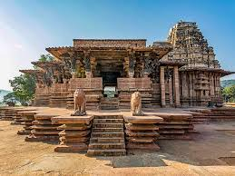

Ramappa Temple
Ramappa Temple, also known as the Ramalingeswara temple, is located in the village of Palampet, about 77 km from Warangal, Telangana. This temple was built in 1213 AD by the Kakatiya ruler Ganapati Deva and is known for its stunning architecture and intricate carvings.
Location: Palampet, Warangal, Telangana, India
Ticket Price: INR 25 for Indian citizens, INR 300 for foreign nationals
Transportation: Accessible by road, well-connected by local buses and taxis.